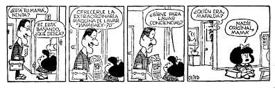

Panel que tuvo lugar durante la Feria Internacional del Libro en Camagüey, abril de 2016
María Antonia Borroto:
Voy a iniciar este panel con una anécdota. En la casa contigua a la mía había un punto de leche. Yo protestaba muy a menudo porque los camiones subían a la acera, temiendo que la misma se dañara. Un día sentí un ruido bastante extraño y al salir veo que la parte trasera del camión está a escasos centímetros de mi fachada. Discutí duramente con los camioneros, y cuando amenacé con una demanda me espetaron que si creía que estaba en los Estados Unidos. Reconozco que me dio un ataque de ira, y le respondí que si él insinuaba que Cuba no es un Estado de Derecho, y que yo como ciudadana cubana no tenía ningún derecho a plantear mis preocupaciones. La situación siguió hasta que, finalmente, la acera se rompió. Fui al Combinado Lácteo y me dijeron que la única solución era retirar el punto de leche, a lo que me opuse, pues podría implicar un conflicto con los vecinos, al tiempo que los privaría de una entrada económica. Yo solo quería que al lugar enviaran un camión que, al tener una manguera más larga, no tuviera que subir a la acera. Algo tan sencillo como eso. Cambiar el punto de leche de lugar era cambiar de lugar el problema. En vistas de que allí no habría solución, me fui a la Fiscalía, a poner una queja. Me explicaron que eso solo era posible si mi fachada había sido dañada. Como no era el caso, tenía que ir a Comunales para que esta empresa fuera la que se quejara frente al Lácteo. Yo simplemente era —así me dijeron— una buena ciudadana preocupada por su entorno.
Si bien no hice más nada, pues mi familia me recomendó sosiego y evitar un conflicto con los vecinos, el asunto me dejó pensando. Por eso y porque sé que en esta mesa y en el público hay otros muchos buenos ciudadanos que han sentido hervir su sangre una y otra vez me regocijo por la posibilidad de este panel. Quiero darle la palabra en primer lugar a René Fidel González, profesor de Derecho de la Universidad de Oriente.
René Fidel:
Yo no suelo ser muy académico, sobre todo cuando intervengo en paneles de este tipo, por eso voy a rehuir la tentación de dar un concepto de ciudadanía. Más que todo hay que asumir el concepto en su complejidad y esa intención se plantea desde el título del panel. Hay una pregunta de fondo, la debemos intentar responder: ¿hasta qué punto hay una cultura de la ciudadanía en Cuba y hasta qué punto esa cultura ha logrado producir lo que debía ser el hombre moderno cubano, o sea, el ciudadano? Tratando de abrir, como siempre intento, más que un área de la respuesta un área de la pregunta, podría sugerir que en mi opinión lo que ha pasado en Cuba es una cosa muy singular, pues hay mucha singularidad en nuestra existencia como nación, entre otras cosas porque fuimos nación antes que estado y ese es un dato muy importante.
Ayer hice un apunte: “el desafío de la cultura política democrática republicana”, se relacionaba con el panel anterior, dedicado a las relaciones Cuba-Estados Unidos y el desafío que planteaban estas relaciones desde el punto de vista cultural, asumiendo la necesidad que había de rescatar un área de nuestra cultura muy poco apreciada que es el área de la cultura política. En ese sentido uno puede entender fácilmente que hay en Cuba un proceso de construcción de la ciudadanía que empieza desde el siglo XIX y que se va adentrar en la República de una manera vertiginosa, fascinante y también muy efectiva. Yo apunto lo siguiente, tratando insisto de no hacer demasiado larga la exposición: la última revolución ocurrida en Cuba es nada más y nada menos que una revolución ciudadana. Eso es un detalle que hay que apreciar y que muchas veces se enmascara en esa frase de “La generación del centenario” que está acuñada históricamente porque es en el año del centenario del natalicio de Martí cuando se producen los acontecimientos y la reacción de estas personas. Pero insisto, uno no puede encontrar en la traza de cada una de ellas más que una multitud de ideologías de todo tipo y el hecho indiscutible de que están respaldados no tanto por ideologías como por valores y esos valores están formados en las escuelas cubanas.
Hay todo un proceso desde la familia hasta la escuela y pienso en la enorme gratitud que le debemos a mucha gente del mundo, incluido a estadounidenses y estoy pensando en Alex Freire, el primer superintendente de escuela que tuvo la ocupación norteamericana en Cuba, que fue considerado por Leonard Wood como el hombre más peligroso que había en Cuba. Es curioso que un funcionario norteamericano nombre a un colega suyo de esta manera, y la razón es que Alex Freire, como tantos y tantos norteamericanos que no seguían la línea imperialista, se preocupó porque en Cuba se formaran maestros y sobre todo, porque los planes de estudio reivindicaran esas identidades y esos valores formados a través de años de dura lucha y de gestación de una idea de patria a partir de una visión republicana de lo que debía ser la patria. A este norteamericano se le debe en buena medida que los cubanos hayan tenido escuelas normalistas, las que no son otra cosa que la continuidad caribeña de un experimento hecho en Nueva York para educar ciudadanamente dentro de una república a los emigrantes italianos que llegaban allí. Alex Freire fue responsable de llevar a miles de maestros cubanos a estudiar a Harvard y yo tengo una imagen alucinante que puede erizar a cualquiera, muestra la residencia de Harvard a la que nunca he ido y no tengo idea de cómo puede lucir hoy, con una bandera cubana esperando a los maestros que llegaban y al rector de la Universidad dando un pequeño discurso en inglés para decir después, en un español perfecto, “bienvenidos a un país grande, un país con historia, un país de libertad, pero no queremos que imiten a nuestro país, sino que construyan el suyo", es decir, mientras sectores del gobierno norteamericano estaban abogando por una visión imperialista que implicaba adueñarse de Cuba, mucha gente en Estados Unidos estaba pensando en que Cuba fuera libre.
Es resultado de esa cubanidad gestada en la manigua y sobre todo de ese pensamiento libertario que se gestiona durante siglos, la eclosión ya en la república de un generación nueva de ciudadanos que va a nutrirse de eso valores pasados y va a buscar una nueva visión de la vida política dentro de la sociedad cubana, por eso yo reivindicaba la necesidad de rescatar esa cultura republicana.
Porque es curioso que esa construcción de la ciudadanía que se hizo en el peor de los momentos haya tenido un golpe de parálisis, increíblemente, después de la revolución, la revolución que es generada por los ciudadanos luego tiene una relación conflictiva con el tema de la ciudadanía. Estoy diciendo esto último con propiedad, no es una cuestión de simple criterio, hay todo un proceso de análisis para poder decir esto aunque cuando se diga así pueda parecer falto de sustento. El tema de la ciudadanía puede verse no solamente como una identidad y una práctica política y social, habla de una comprensión de la sociedad y de una comprensión republicana de la sociedad, no tanto de los deberes de las personas y es esto último lo que desgraciadamente ha pesado demasiado tiempo entre nosotros. Mientras que otras identidades como la de revolucionario o la de comunista alcanzaban preponderancia en un contexto de profundos conflictos con esa potencia cuyo influjo desvirtuaba una vez más el desarrollo de nuestra vida política, esta revolución relegó la ciudadanía (no pienso que por mala fe) al campo del enemigo. Ciudadano fue identificado como burgués, fue identificado como enemigo. Eso es un hecho lamentable.
Yo recuerdo, y creo que muchos aquí podrán compartir esa memoria visual, una película tan valiosa, tan bien hecha como “El hombre de Maisinicú” donde al protagonista —vean ustedes la contradicción, un hombre que es agente de la Seguridad del Estado, que ha infiltrado las bandas del Escambray—, una persona lo llama ciudadano y su reacción es antológica, pues le dice: “Ciudadano no, compañero”. Ayer una compañera fuera de aquí me preguntaba qué pasaba, y yo le decía, bueno, entre otras cosas pasa que se olvidó la cultura del derecho en Cuba y hubo un proceso que afectó a la educación del derecho, pero que también afectó, por supuesto, al conocimiento del derecho que estuvo dentro de la revolución. La revolución borró y tenía que borrar además todo lo construido anteriormente, ese proceso no estuvo exento de contradicciones y de excesos. Un ejemplo es el cierre de la Facultad de Derecho.
Hace poco en el programa de televisión “Con dos que se quieran”, Martínez Furé decía que alguna vez estudió derecho y que había dejado esa carrera porque alguien había dicho: “Abogados para qué”, tenía que ser alguien muy importante para que influyera de manera tan determinante en la vida de una persona. Yo no quiero ahora mismo marcar el nombre porque todo tiene una explicación, lo malo está en ocultar las cosas. La persona que dijo eso es Fidel Castro, lo dijo en un contexto determinado, en una visión determinada y en medio de un optimismo generalizado sobre la vida del país. La pregunta “¿Abogados para qué?” no era una pregunta que negara la carrera ni mucho menos, sino que pensaba en un estado que se iba a ocupar de todo el mundo. Había un idealismo muy grande, lo cierto es que la carrera estuvo a punto de terminar en todo el país, pensemos que en el año 75 —si la memoria no me falla— llegaron a graduarse solo tres abogados en todo el país. La facultad de derecho de Santiago de Cuba fue cerrada no por una resolución oficial, sino porque eventualmente se había producido dentro de la revolución un proceso de ruptura muy grande que había afectado al profesional, y al igual que los médicos, también otros profesores se fueron o cayeron víctimas de las contradicciones de ser profesor y abogado al mismo tiempo, lo cual generó tensiones muy grandes. Una parte de los abogados que eran profesores defendieron después a los asesinos de la dictadura y eso fue un peso muy grande que tuvieron profesionalmente. A ello habría que añadir el envejecimiento, estoy pensando en un gran profesor, santiaguero, historiador del derecho, que falleció de muerte natural. Lo cierto es que se produjo una ruptura generacional que afectó a la educación del derecho en Cuba y eso luego se agravó con la inclusión cubana en el CAME, que hizo que se desnaturalizara el derecho y entrara mucho del mal derecho socialista, del mal derecho soviético, proceso que de alguna forma esterilizó lo que había sido el derecho en Cuba.
Eso en este plano educativo en buena medida está superado hoy en día, sin embargo los efectos sociales son mucho más notables, significó una absoluta pérdida de la importancia social del derecho. Hoy los cubanos acuden cien veces a un periódico o a un funcionario del Partido antes que ir a un tribunal. Este caso planteado por la moderadora es un caso atípico que por suerte se va abriendo paso cada vez más, por suerte, pero es un caso atípico, la cultura cubana ha despreciado el derecho en los últimos cincuenta años, a tal punto que es muy significativo que la población cubana no conoce la Constitución, es un hecho real, insultante y aunque puede ser explicado y comprendido de muchas formas sí es una realidad, revertirlo resulta fundamental para que ocurra un proceso de democratización de la sociedad cubana, algo que considero fundamental.
Ayer yo explicaba, tratando de darle coherencia a lo que estoy diciendo ahora, que la cultura política cubana no había sido nunca democrática y como práctica social tampoco había sido democrática porque venía de una sociedad completamente golpeada, estigmatizada, marcada por el autoritarismo, por el dogmatismo, por la represión; estoy hablando de trescientos o cuatrocientos años de dominación española y después un ciclo de revoluciones que llegan hasta el siglo XX y que no generan necesariamente una actitud cívica. Cuba hoy necesita democratizarse, ese es a mi juicio el gran desafío, ese desafío pasa también por una ciudadanización de la población cubana, que más que generar estadanos, personas cumplidoras de la ley o de sus deberes —cosa que además está bastante claro que es un fracaso, pues si no conocemos las leyes evidentemente también las violamos—, más que buscar personas que simplemente tengan un compromiso con la política, más que eso hay que buscar personas que piensen y que actúen de acuerdo a una praxis y a unos valores, y esa praxis y esos valores están nada más y nada menos que en la Constitución de la República de Cuba. A las personas que incluso se alarman o se escandalizan por las opiniones de cualquier ciudadano del país, hay que recordarles que el artículo uno de la Constitución —allí es donde están los problemas del analfabetismo constitucional y de la escasa vigencia que tiene el derecho en Cuba— hay que recordarles, decía, que el artículo uno de la Constitución dice muy claramente que la República de Cuba está hecha, entre otras cosas, para el disfrute de la libertad política.

Ayer en otro panel la profesora Cento decía que hacían falta leyes complementarias. A la Constitución no le hacen falta leyes complementarias cuando se trata de los valores fundamentales, basta con que estén declarados en la Constitución para que tengan plena eficacia. Por supuesto ese artículo uno habla de la justicia social y de la solidaridad humana, los tres grandes valores de la revolución cubana. Uno puede preguntarse hasta qué punto están realizados, pero esa no debe ser la mayor preocupación, sino hasta qué punto están interiorizados y apropiados por los individuos y hasta qué punto se convierten en valores y en prácticas. Más allá de eso, probablemente el gran déficit de los últimos cincuenta años, y vuelvo a lo que dije ayer, tiene que ver con lo difícil que ha sido para Cuba gestionar una cultura democrática. Yo creo que esa es la víctima fundamental de la agresión norteamericana a Cuba que inicia a partir del 59 y no hay que olvidar que el intento de transformar las relaciones económicas que teníamos con los Estados Unidos, esas que ahora queremos sostener, fueron el origen del conflicto, no hay que olvidar eso: no fue una cuestión ideológica, fue el intento de cambiar nuestras relaciones económicas con los Estados Unidos lo que provocó el conflicto y lo que de hecho generó una agresividad muy rabiosa.
Esta beligerancia permitió también que se olvidaran otras muchas cosas que a mi juicio son trascendentales, por eso la importancia de democratizar al país, democratizarlo como una vocación por la continuidad, pues si esta revolución inspiró a mucha gente e hizo temblar a otros fue precisamente porque logró gestionar un nivel de democracia altísimo, sin embargo no pudo seguir avanzando en esa línea por la agresividad de los Estados Unidos. A eso hay que agregarle contradicciones nuestras, deformaciones nuestras, haber adoptado el tipo de socialismo soviético que tan nefasto nos fue sobre todo en lo político, por las estructuras de control político de las personas, de prohibición de su imaginación política y tantos y tantos problemas que hemos tenido a lo largo de cincuenta años. Lo cierto es que ahora Cuba necesita democratizarse y hacerlo como una forma de construir lo que yo he dado en llamar el tercer ciclo civilizatorio cubano, en mi opinión ha habido tres ciclos civilizatorios en nuestro país, estamos ahora entrando en la parte final del tercero y podemos entrar en el cuarto ciclo civilizatorio que va a demandar de los ciudadanos y de la Constitución. Yo casi en broma lo llamo con mis estudiantes “La patria constitucional” porque es la que nos falta.
Soy optimista por una razón básica: Cuba comparte con otros países de América Latina un recorrido histórico. En el año 59 o 58 ya había triunfado la revolución venezolana, mas allá de los criterios que uno pueda tener sobre ella, había triunfado, de hecho, el apoyo de esa revolución venezolana llegó a las guerrillas cubanas y por eso Fidel Castro lo primero que hizo después que triunfó la Revolución fue ir a Venezuela a agradecer lo que habían hecho por el pueblo de Cuba. Durante los siguientes cincuenta años cada uno siguió con su modelo, Cuba con una revolución que creó un estado socialista, y Venezuela, donde la revolución duró muy poco en el poder, luego siguió su camino al estilo de las democracias occidentales. Son dos experiencias de gobierno, dos experiencias políticas.
Lo curioso es que en el año 98 una persona llegó al poder en Venezuela, llegó al poder haciendo un acto político impresionante para quien aparentemente había sido un golpista en el sentido tradicional de la palabra y se había educado como militar toda su vida: Hugo Chávez, llegó a la presidencia y juró su condición de presidente sobre una constitución que él mismo llamó moribunda, pues bien en el 2002 a este hombre le dan un golpe de estado y regresa al poder en una marea humana. A mí, que desde aquella época ya venía incursionado en el tema de la ciudadanía, me llamó la atención que el día del golpe de estado contra Chávez había en Caracas no menos de 100 000 personas manifestándose a favor de este suceso. Yo, que no suelo ser fanático, entendía que las personas que estaban allí no estaban pagadas, ni contratadas, ni manipuladas, eran sencillamente adversarios, gente que lo adversaba por mestizo, por negro, por comunista, por excéntrico, por malhablado, no sé, por miles de razones —en política las personas adversan a otras hasta por vestirse de negro, o sea, por cualquier tontería— y es curioso, Chávez, como todos ustedes saben, tres días después llegó al poder en una impresionante marea humana y en un operativo militar también —justo es decirlo—, de militares que eran leales, no a Chávez, sino a la Constitución.
La pregunta que me hice durante los siguientes seis años fue dónde estaban las cien mil personas que el día del golpe desfilaron contra Chávez, si la policía metropolitana estaba controlada por los golpistas, si la ciudad capital estaba controlada por los golpistas, dónde estaban esas personas cuando de los cerros empezaron a bajar las multitudes que rescataron a Chávez. La respuesta me la dio seis años después un venezolano antichavista, me dijo: “René, no busques más la respuesta, es simple, aquí la tengo para ti, Chávez no solo juró sobre una Constitución moribunda, sino que hizo un proceso constituyente después, democrático, sumamente democrático del que fue resultado una Constitución y por su apego a esa Constitución, por su discurso completamente conectado a la misma, logró lo que no se había logrado en cincuenta años de experiencia democrática: ciudadanizar a todos los venezolanos, hacer contar para cada ciudadano la Constitución”. Le respondí que podía creer eso, pero insistí en saber dónde estaban las personas, y él me dijo: “Esas personas que no salieron más a la calle fueron las mismas que se quedaron en la casa cuando vieron a Carmona disolver la Asamblea Nacional y de hecho cargarse a la propia Constitución. La respuesta fue simple, este, este, es peor que el otro”.
Hay razones por las cuales ser optimistas y es un proceso de formación social y es un proceso de creencia en valores que puede hacerse en Cuba con toda tranquilidad, de hecho es angustioso porque no tenemos demasiado tiempo, obran contra nosotros prácticas capitalistas que ya se abren paso intensamente destruyendo el tejido social cubano, destruyendo nuestras creencias sociales y por supuesto con eso no se arma ciudadanía. Tenemos relativamente poco tiempo histórico, yo no quiero seguirlos atosigando a ustedes pero por ahí va la primera intervención de lo que puede ser un debate interesante acerca de la cultura de la ciudadanía en Cuba.
Tomás Fernández Robaina:
Quiero antes que nada dar las gracias a los que me han invitado a este panel. Muchas de las cosas que yo voy a decir no van a gustar y la gente no va a estar muy de acuerdo. En primer lugar me parece innegable que nosotros carecemos de una cultura ciudadana fuerte. ¿Por qué carecemos de esa cultura ciudadana? Porque el propio Estado, la propia revolución, la propia sociedad en la cual nos hemos educado no ha expandido el conocimiento de los derechos y obligaciones de los ciudadanos a las grandes masas, este es en primer lugar y por ejemplo, yo voy a decir una cosa que a mí me molestaba mucho cuando en la calle la policía o alguien me decía “ciudadano”. Yo tenía diecisiete años cuando triunfó la revolución y vivía en un barrio periférico, en un barrio marginal donde veía lo terrible que era la policía, a mí no hay quien me haga un cuento de eso, pero yo no recuerdo nunca que la policía le dijera a una persona que iba a detener “ciudadano”, entonces cuando a mí me empiezan a decir ciudadano en el periodo de la revolución, me siento muy raro, me siento muy raro porque es ciudadano con un sentido peyorativo. Yo incluso con esta ingenuidad que aún tengo a pesar de mis 75 años me molestaba muchísimo y decía, pero no, yo soy compañero, yo soy revolucionario. La anécdota me llevó a discutir con el doctor Julio Le Riverend, recuerdo que él me dijo algo y yo le dije: “Usted está equivocado, yo soy un revolucionario, yo no soy un ciudadano”.
¿Qué educación hemos recibido cuando los que nos tienen que dar el ejemplo nos consideran ciudadanos, siempre para mal, “ciudadano, deme su carnet de identidad”, “ciudadano, adónde usted va”. Yo cursé la enseñanza primaria en la Cuba de antes de la revolución, y había una asignatura que se llamaba Cívica de la comunidad o algo así donde se hablaba de los derechos y obligaciones, pero en eso se quedaban y después de la revolución qué pasó, yo puedo decirles que en el ochenta a mí no me quisieron dar mi título universitario porque consideraban que yo no tenía las condiciones para ser un intelectual revolucionario. ¿Adónde yo acudí? Pues a la Fiscalía de la República, a la Constitución, busqué todos los artículos que me garantizaban que yo era un ciudadano cubano y que tenía el derecho a graduarme y a estudiar. ¿Qué fue lo que me dijeron? “Compañero, por favor, su caso no es de legalidad socialista”; a lo que respondí: “Pero cómo va a ser posible que en mi sociedad, con una revolución como la que tenemos, fuera a haber un problema de cualquier tipo que no esté contemplado en la Constitución”.
Tenemos que empezar a alfabetizar sobre qué cosa es la ciudadanía y a expandir ese conocimiento que muy bien está reflejado en los libros que René Fidel ha escrito, en las clases que da, pero eso hay que llevarlo a la sociedad, a la comunidad a través de los medios de prensa porque si eso no se enseña, si eso no se expande tú no tienes como saberlo.
En la Habana hay un grupo de abogados que justamente lo que están haciendo es tratar de dar seminarios en determinados lugares para que cada ciudadano se asuma como tal, porque si tú haces demanda de tus derechos y esos derechos no te los dan, entonces qué pasa… apatía, indiferencia. El caso mío se resolvió porque yo luché hasta el final y yo siempre decía a mí me tienen que dar mi título universitario aunque sea cuatro horas antes de que me entierren en el cementerio, fíjate con qué perspectiva tan larga, pero yo soy una persona con mucha fe, en primer lugar en la revolución, en la justicia que la revolución preconiza, pero también en nuestra condición de ciudadanos aunque a veces lleguemos a un punto de apatía o de paranoia.
Uno de los problemas que nosotros tenemos en la actualidad es consecuencia del silencio, de la apatía, de la postura que como ciudadanos no fuimos capaces de asumir. En 1978 me metí en el mundo de la historia de la cultura del negro; mi libro El negro en Cuba tuvo que esperar once años para publicarse. Nuestros derechos de ciudadanos tenemos que hacerlos valer, siempre demandándolo con un lenguaje de colaboración, de cooperación, pero en otras personas todo esto lo que produce es resentimiento.